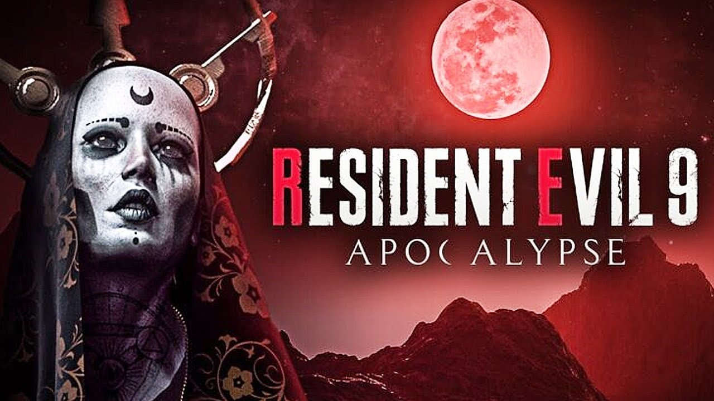

Ultimo Video
Tremendo, Eliminaron a personajes de del Remake de Resident Evil 4, aun asi gracias a las filtraciones sabemos muchas otras cosas mas que nos deparan en este tremendo juego!!!
Ver MasNoticias-Filtraciones
De parte del insider Dusk Golem tenemos nueva informacion acerca de Resident Evil 9, justo alguna filtraciones que nos daran una idea de lo que podemos esperar de la novena entrega de la saga